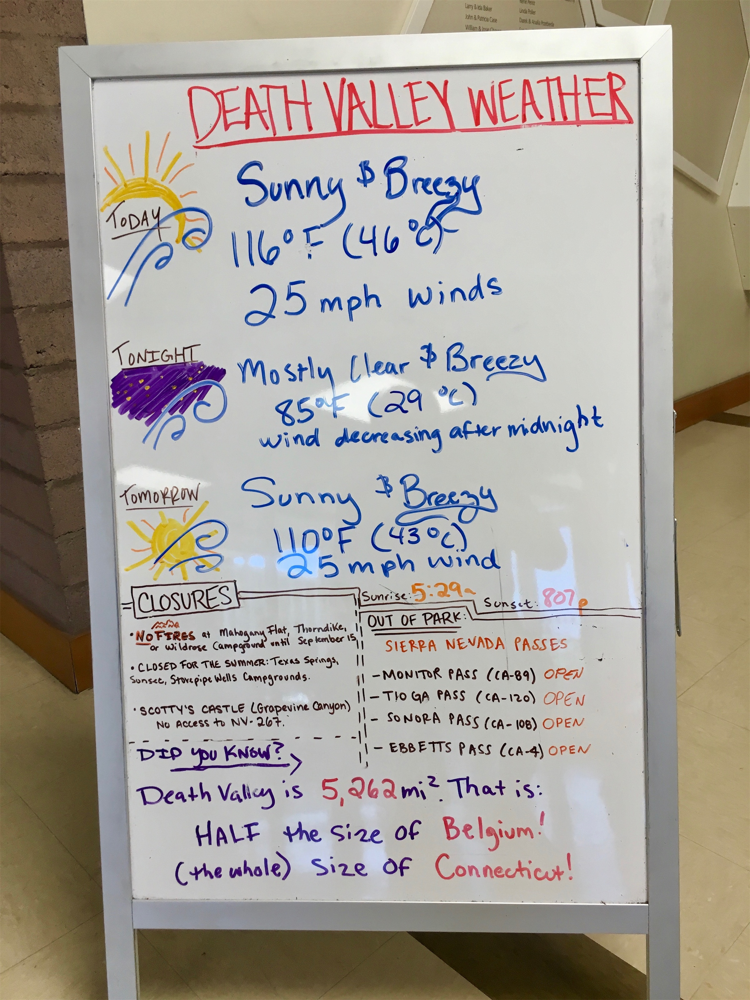
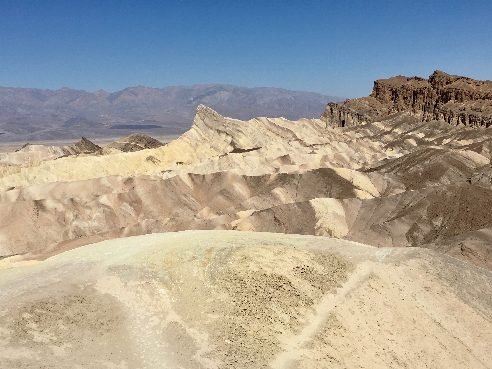
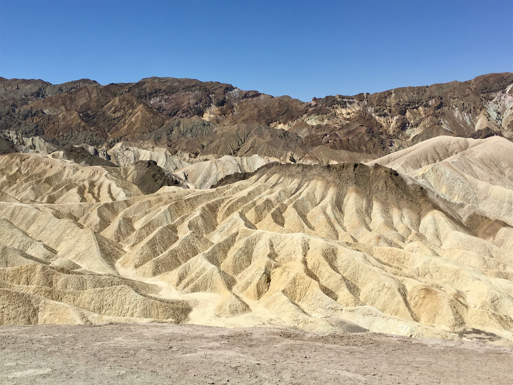
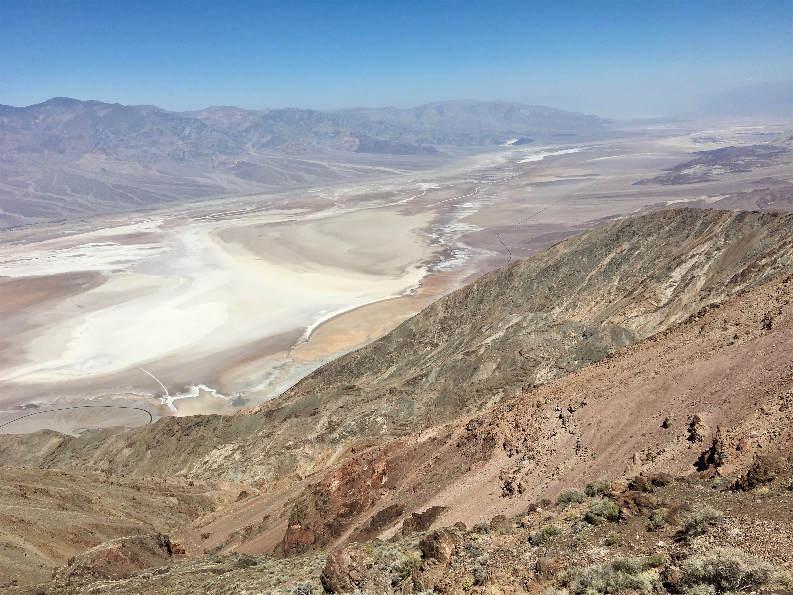
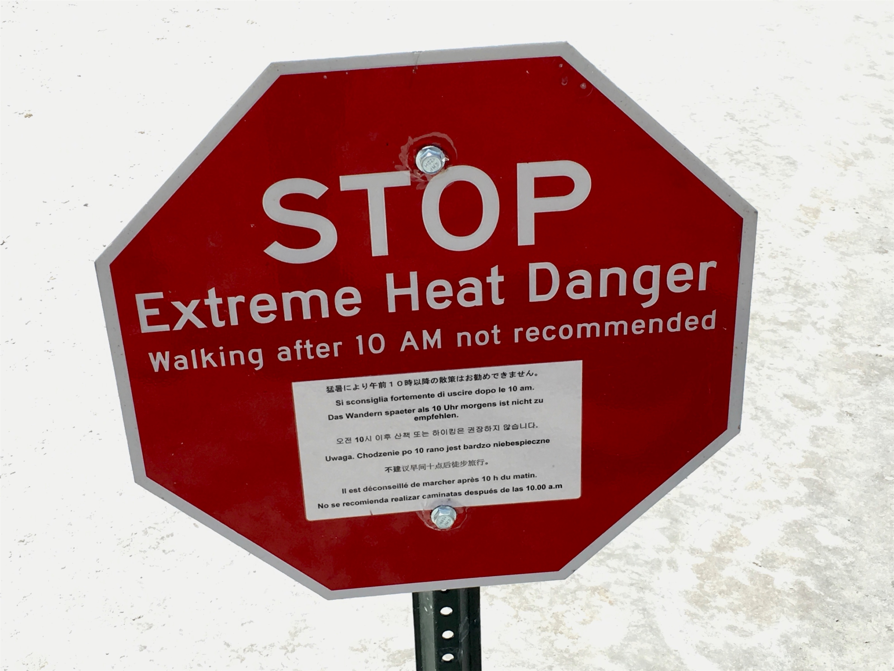
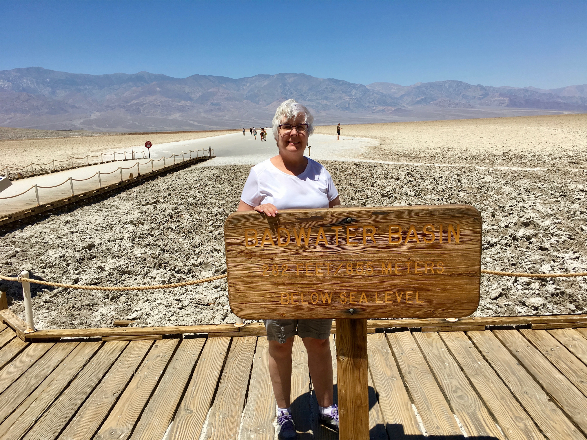
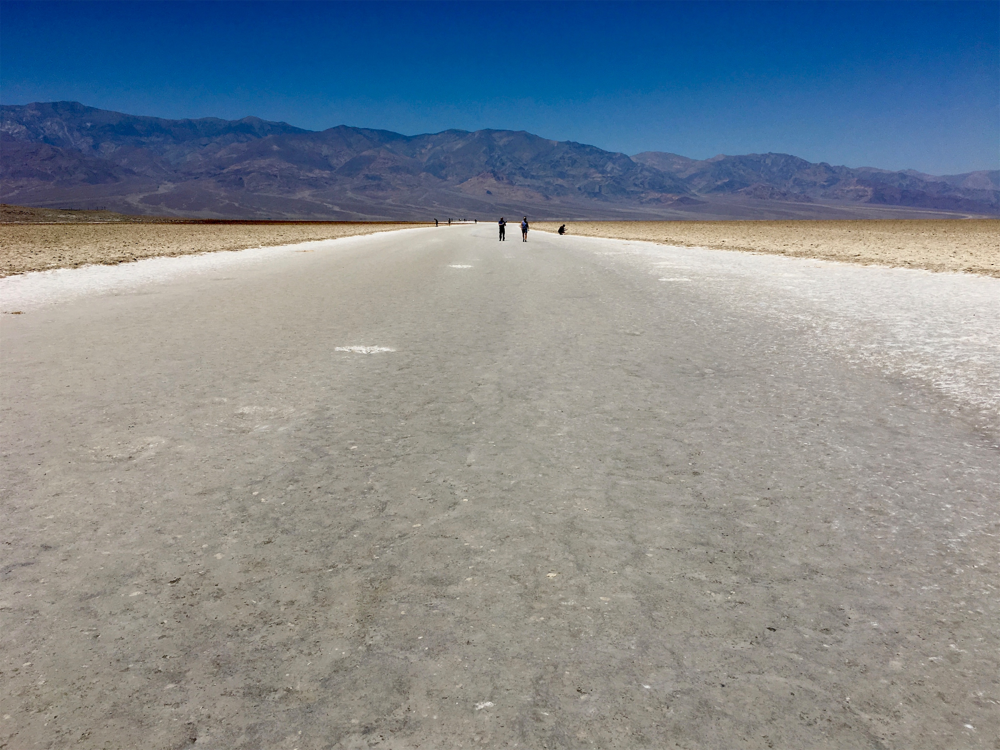
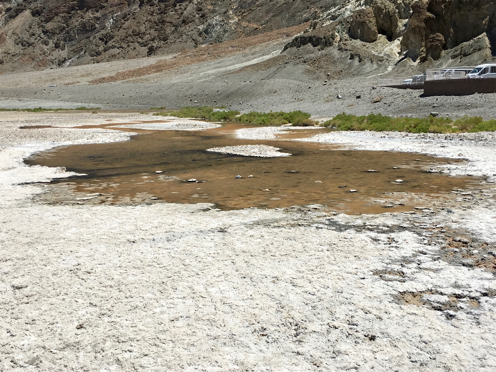
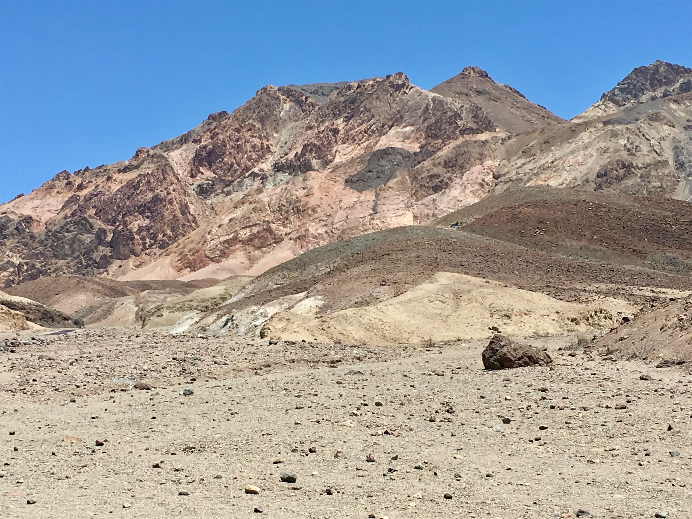
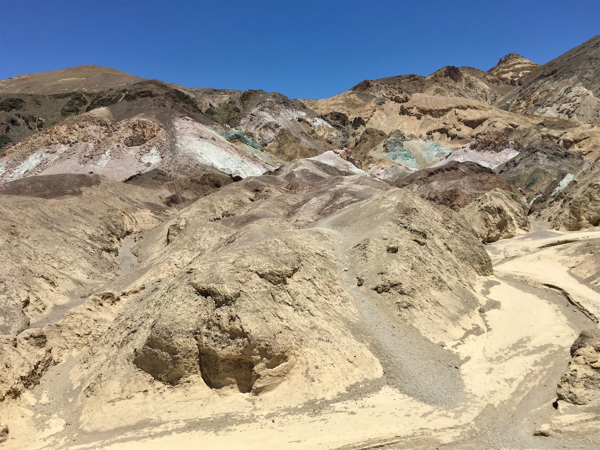

Saturday, Jun 16, 2018, 2:54 PM PDT
Furnace Creek Visitor Center, Death Valley, CA, United States
90°F Sunny
90°F Sunny
![]()
6/15 Katchina Lodge, AZ -> Needles, CA 242 mi, 5 hr
6/16 Needles, CA -> The Ranch at Death Valley, CA 224 mi, 4.25 hr
6/17 The Ranch at Death Valley, CA -> The Ranch at Death Valley, CA 100 mi, 3 hr
Trip Total: 3,525 mi
From Grand Canyon, we headed west again on I-40, with constantly changing scenery and continued echos of Route 66. We stayed overnight in Needles, which is just across the Arizona border in California, the land of $4.50/gallon gas. We had to stop at an agricultural inspection station, and they confiscated our bag of rotting Minnesota apples. In the morning, we headed up Highway 53 to Las Vegas, then west into Death Valley.
Death Valley is like another planet, which is why some Star Wars scenes were shot here. It is also a place of contrasts and extremes. It was 107 when we arrived, with 10% humidity, and we didn’t expect the very high winds. It holds the record for the highest temperature on earth, 134, yet it is about 30 degrees cooler a short drive up the mountains that border the valley. It’s the lowest spot in North America, at -232 ft, yet on a clear day you can see Mt. Witney (85 miles away), the highest spot in the continental US at 14,505 ft. The mountain shapes and colors rival, if not surpass, the Painted Desert and the Grand Canyon. The average annual rainfall is just over 2 inches, yet the dry white salt bed in the valley has a constant, small, spring-fed pool of water. Our hotel in Furnace Creek is also on a spring, and water is so plentiful that there is a green golf course and swimming pool on the property. There is one gas station, and only two places to eat (expensive and really expensive).
We went out to stargaze the first night (95 degrees at 10 PM), at the nearby old Harmony Borax Works (borax mining was a major industry here), and we were rewarded with an unbelievably clear sky filled with thousands of stars. It’s one of the least light-polluted places in the US. The next day, it was cooler and less windy. We went on a 100 mile drive (with 50 bottles of water), first to Zabriskie Point for a great view, then to Dante’s Peak at 5,475 ft that let us look down on the valley floor below. This one spot was worth the whole trip, and the 68 degree temp felt great. We then backtracked to Badwater Basin, the lowest spot, and walked on the white salt flat. Our Minnesota legs at first thought we were walking on ice. We saw the small pool of water from a spring there. On the drive back, we took Artists Drive and saw unparalleled colors.
Overall, this was a surprisingly beautiful and fascinating place, and with some care and preparation it was also a manageable visit, even in the summer heat.









